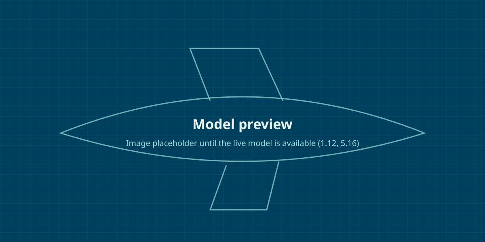

Home › Systems › Data Links
Sub-system: Data Links General

Items that serve the Data Links System as a whole and cannot be placed in a single other Sub-system of it (2B.11). Framework template: a Production Hub shows its data here.
- Parent
- Data Links › Mission Systems
- Design Lead (owner)
- Set per project: the Design Lead from the Role register (5.30)
- Design Sub-team
- Set per project
- Verification status
- Unverified (generic framework content, not yet content-reviewed)
- Last reviewed
- 2026-10-12
Requirement
EDRs0
Set per project: the EDRs tagged to this Data Links General are listed here as documents, each a link to its EDR page (5.21, 6B.2). Line items are shown only on FDPS pages.
Nothing here matches the filters.
TSMs0
Set per project: TSMs reach this Data Links General through its applicable Design Types (route Sub-system > Design Type > TSM, 6B.5), and through System and Discipline tags. Each TSM is listed as a document link.
Nothing here matches the filters.
Verification
Compliance0
Per project: a compliance summary per document and per FDPS (5.21).
Nothing here matches the filters.
Verifications0
Per project: Verification records of the FDPSs linked to this page.
Nothing here matches the filters.
Reviews0
Per project: Design Reviews covering FDPSs linked here. See design reviews.
Nothing here matches the filters.
Product
FDPSs0
FDPS pages exist only in a Production Hub. On a Sub-system page the Product group lists only the linked FDPSs, each with its status and Build Stations; Part Instances are listed on FDPS pages (5.21, 5.24).
Nothing here matches the filters.
Considerations
Interfacing SystemsPlaceholder (generic, fictional)
Items that serve the Data Links System as a whole and cannot be placed in a single other Sub-system of it (2B.11). Placeholder (generic, fictional)
Interfacing Systems
| Interfacing System | Reason |
|---|---|
| Set per project (6C.20). The list is finite: it never says 'all Systems'. A non-structural Sub-system page names the structural Systems it attaches to. | |
Catch-all: holds only items that serve the System as a whole and cannot be placed in a single other Sub-system (2B.11).
Nothing here matches the filters.
Disciplines and Stakeholders19
- Aerodynamics
- Airworthiness and Certification
- Configuration Management
- Design
- Electrical Systems
- Electro-Magnetic Compatibility
- Fluid Systems
- Human Factors
- Low Observability
- Maintainability, Reliability and Ground Equipment
- Manufacturing Engineering
- Materials and Processes
- Mechanical Systems
- Quality
- Safety
- Standard Parts and Supply Chain
- Structural Analysis
- Test
- Weight
Nothing here matches the filters.
Working Data
Issues0
Per project: open Issues affecting this Data Links General. See Issue escalation.
Nothing here matches the filters.
Lessons Learned1
- LL-FW-0000040 Set pipe clamp spacing from the installed vibration spectrum (generic)
Nothing here matches the filters.